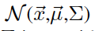
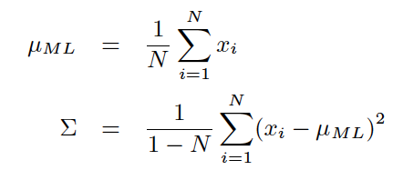
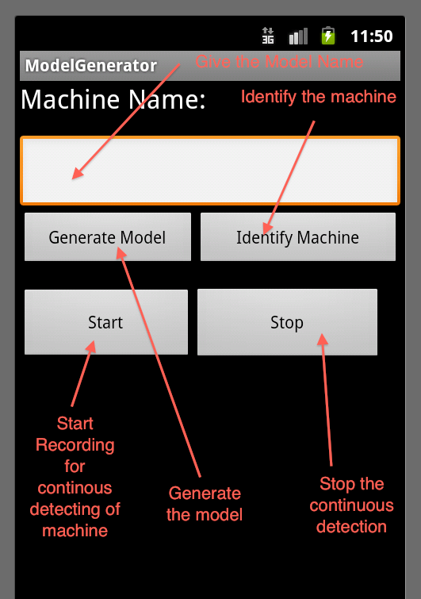
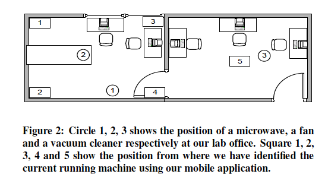
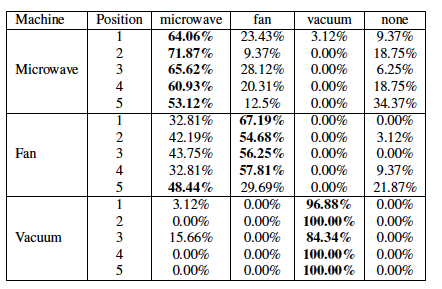
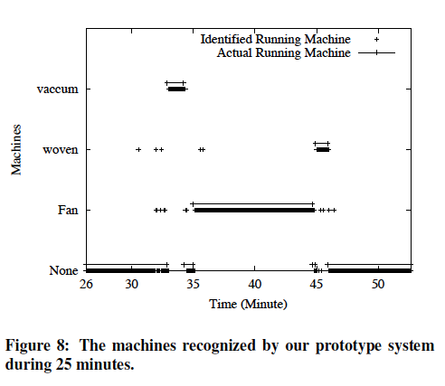
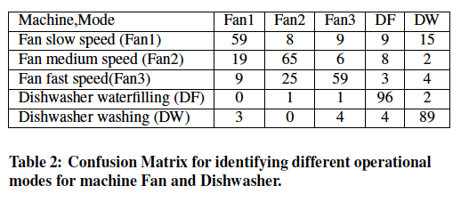
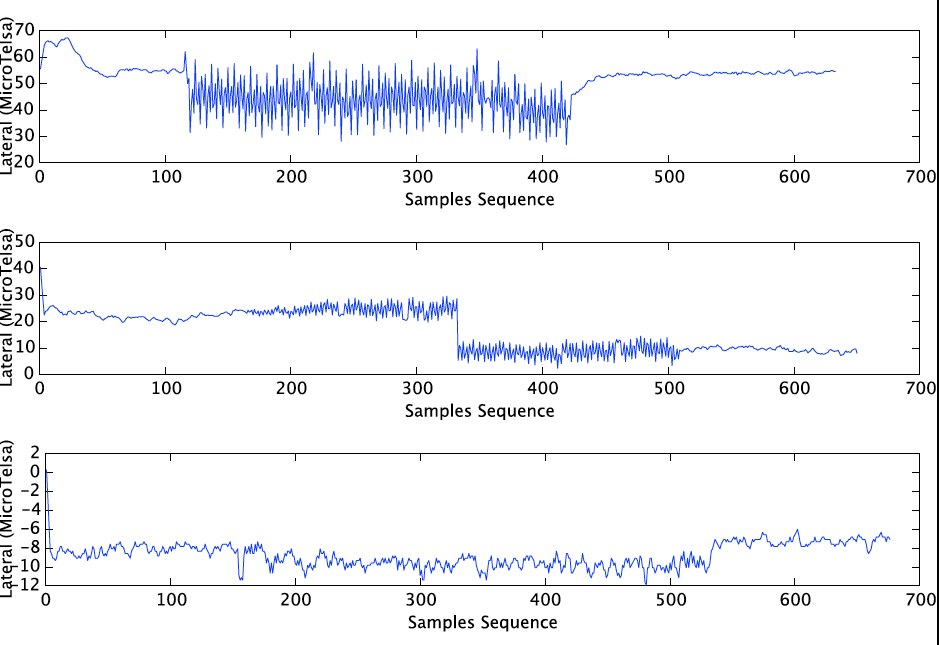
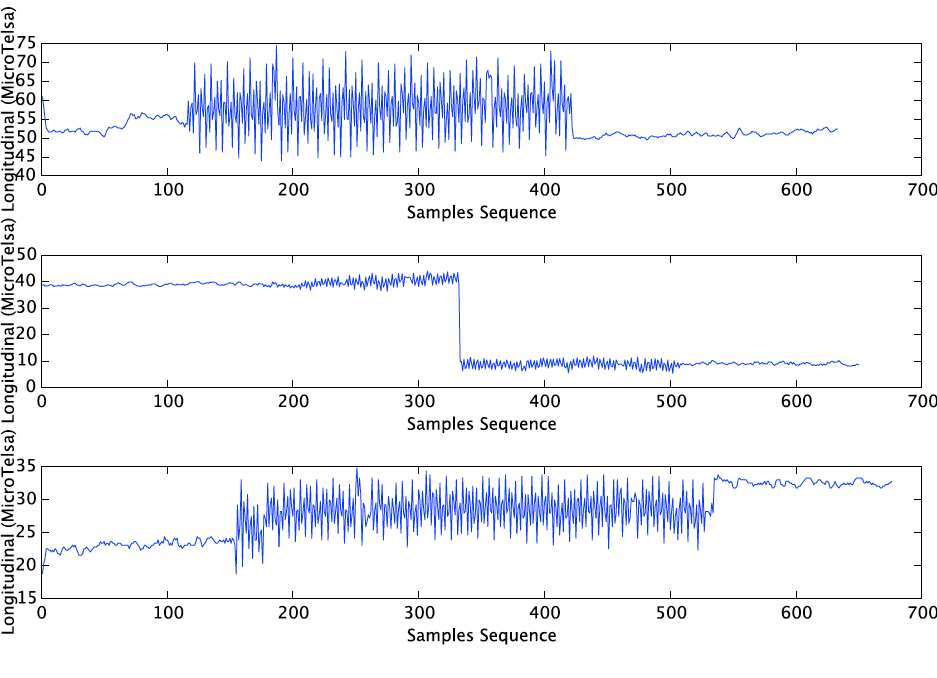
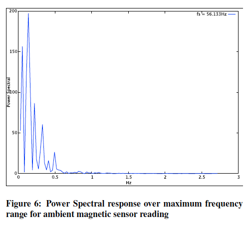

EnergySniffer is an home energy usage monitoring application based on smartphone sensors reading. The main objective of this project is to exploit the sensors in smartphones to detect usage of home appliances. From that usage and the detection of machine can help us to measure energy usage by that machine. However, as a part of this project, we have only exploited the Audio and Magnetic sensor for this project. As these sensors in smartphones are not powerful enough to monitor the usage of machine, so we conduct some research to identify the challenges of using the sensors in smartphone for detecting energy usage.
EnergySniffer project was intially targeted to the Customers. However, later we make this project much more research oriented. So the outcomes of this project is some research analysis and challenges to implement EnergySniffer project. During this project we have hacked the Android phone to understand the operation of both Audio and Magnetic sensor. Also the audio processing and machine learning algorithm was implemented in native code C/C++ at Kernel level for better performance. Providing this source code as an efficient API for the future developer and researcher.
Following is the flow chart diagram of the main component of the EnergySniffer System. It has mainly two components i) Offline Learning and ii) Online detecting. In offline learning it collects the sensor data to build models and in online detecting it detects the model based on capturing real sensor data.
In this project we fully implemented the Audio sensor data to collect the acoustic sensor data to build probabilistic generative models for different machine and then we use those model to detect running machines 

The Screen shot of the testing application is following:

| Task | Done by |
| FFT/Signal Processing/MFCC feature Implementation | Mostafa |
| Machine learning/ Model Implementation | Mostafa |
| Machine detection implementation | Mostafa |
| Magnetic Sesnsor Research | Mostafa |
| Collecting Magnetic Sensor Data at driver level | Mostafa |

Following are some result of using Audio sensor data to detect machines:



In Audio Sensor experiment we were not able to detect multiple machine at a time. Also We found that signal processing taken a huge amount of processing time, which make the detection technique difficult. So We are now implementing the FFT/Signal processing and machine learning algorithm in Android OS.


The magnetic sensor itself runs a very low bandwidth low pass filtering over the collected data. Magnetic sensor is embedded with the smartphone to detect the orientation of the smartphone screen and for calculating electronic compass. For both this purpose the magnetic field of the earth needs to be determined accurately and should be resistive to background interference noise. Thats why this sensor in smartphone use a very low bandwidth low pass filtering to make the data DC and to remove all high frequency interference. Which make it worse for developing our application on measuring electric power consume by a running machine.
